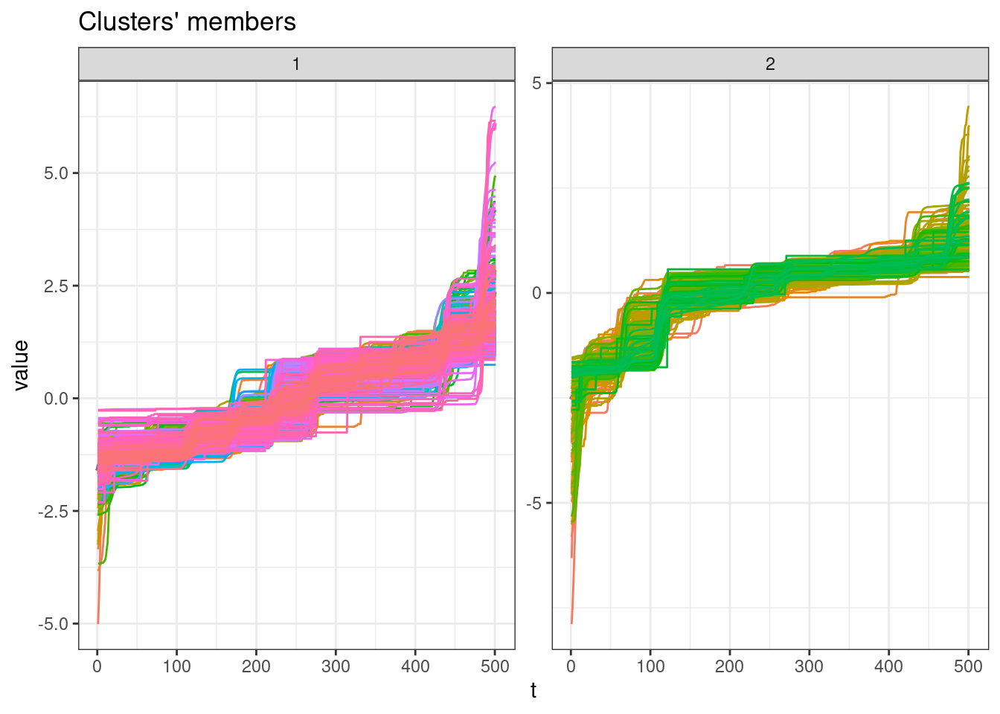
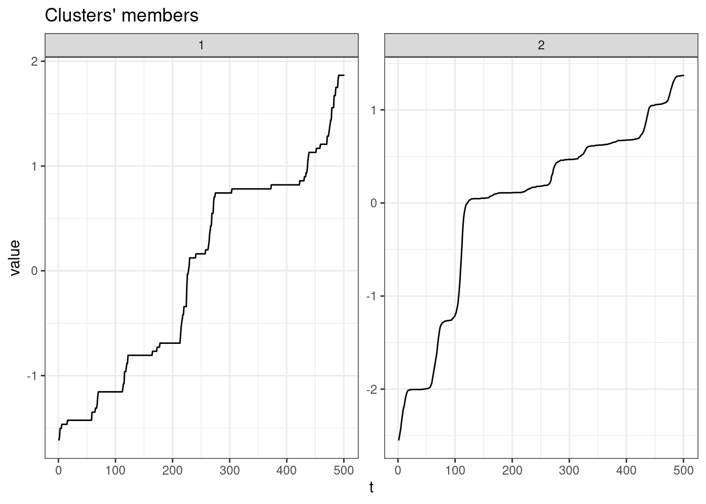

library(tidyverse)
library(lubridate)
library(arrow)
library(timetk)
library(dtwclust)
library(kableExtra)
library(tictoc)
source("../functions.R")Raw cases, cumulative
This notebook aims to cluster the Brazilian municipalities considering dengue raw cases time-series similarities.
Packages
Load data
Load the bundled data.
tdengue <- open_dataset(sources = data_dir("bundled_data/tdengue.parquet")) %>%
select(mun, date, cases = cases_cum) %>%
collect()
dim(tdengue)[1] 340179 3Prepare data
The chunk bellow formats the dataset for tsclust use.
tdengue <- tdengue %>%
# Prepare time series
arrange(mun) %>%
pivot_wider(names_from = mun, values_from = cases) %>%
select(-date) %>%
t() %>%
# Convert object
tslist()length(tdengue)[1] 679Clustering
Sequence of k groups to be used.
k_seq <- 2:10SBD method
tic()
clust <- tsclust(
series = tdengue,
type = "partitional",
k = k_seq,
distance = "sbd",
seed = 13
)
toc()0.848 sec elapsedCluster Validity Indices (CVI)
names(clust) <- paste0("k_", k_seq)
res_cvi <- sapply(clust, cvi, type = "internal") %>%
t() %>%
as_tibble(rownames = "k") %>%
arrange(-Sil)
res_cvi %>%
kbl() %>%
kable_styling()| k | Sil | SF | CH | DB | DBstar | D | COP |
|---|---|---|---|---|---|---|---|
| k_2 | 0.4442625 | 0.5940473 | 345.3780 | 1.035863 | 1.035863 | 0.0080048 | 0.2020110 |
| k_3 | 0.4022197 | 0.5792206 | 346.5557 | 1.239092 | 1.387231 | 0.0018582 | 0.1273269 |
| k_4 | 0.3334983 | 0.5737804 | 245.6445 | 1.121578 | 1.815766 | 0.0020324 | 0.1040958 |
| k_7 | 0.3274548 | 0.5339155 | 190.7100 | 1.212410 | 2.079583 | 0.0048570 | 0.0682683 |
| k_6 | 0.3125595 | 0.5426452 | 206.1180 | 1.239948 | 2.105174 | 0.0086538 | 0.0732875 |
| k_10 | 0.2993463 | 0.5225233 | 168.3385 | 1.828146 | 3.486689 | 0.0023074 | 0.0562692 |
| k_9 | 0.2813463 | 0.5244313 | 182.8368 | 1.213397 | 1.947885 | 0.0028276 | 0.0568539 |
| k_5 | 0.2604179 | 0.5603160 | 209.0601 | 1.290158 | 1.825457 | 0.0033402 | 0.1015525 |
| k_8 | 0.1947688 | 0.5344965 | 148.8106 | 1.642704 | 3.682444 | 0.0023717 | 0.0779969 |
Cluster with higher Silhouette statistic
sel_clust <- clust[[res_cvi[[1,1]]]]plot(sel_clust)
ggsave(filename = "cluster_long.pdf")Saving 7 x 5 in imageplot(sel_clust, type = "centroids", lty = 1)
Cluster sizes
table(sel_clust@cluster)
1 2
500 179 Session info
sessionInfo()R version 4.3.2 (2023-10-31)
Platform: x86_64-pc-linux-gnu (64-bit)
Running under: Ubuntu 22.04.3 LTS
Matrix products: default
BLAS: /usr/lib/x86_64-linux-gnu/blas/libblas.so.3.10.0
LAPACK: /usr/lib/x86_64-linux-gnu/lapack/liblapack.so.3.10.0
Random number generation:
RNG: L'Ecuyer-CMRG
Normal: Inversion
Sample: Rejection
locale:
[1] LC_CTYPE=en_US.UTF-8 LC_NUMERIC=C
[3] LC_TIME=en_CA.UTF-8 LC_COLLATE=en_US.UTF-8
[5] LC_MONETARY=en_CA.UTF-8 LC_MESSAGES=en_US.UTF-8
[7] LC_PAPER=en_CA.UTF-8 LC_NAME=C
[9] LC_ADDRESS=C LC_TELEPHONE=C
[11] LC_MEASUREMENT=en_CA.UTF-8 LC_IDENTIFICATION=C
time zone: Europe/Paris
tzcode source: system (glibc)
attached base packages:
[1] stats graphics grDevices utils datasets methods base
other attached packages:
[1] tictoc_1.2 kableExtra_1.3.4 dtwclust_5.5.12 dtw_1.23-1
[5] proxy_0.4-27 timetk_2.9.0 arrow_13.0.0.1 lubridate_1.9.3
[9] forcats_1.0.0 stringr_1.5.0 dplyr_1.1.3 purrr_1.0.2
[13] readr_2.1.4 tidyr_1.3.0 tibble_3.2.1 ggplot2_3.4.4
[17] tidyverse_2.0.0
loaded via a namespace (and not attached):
[1] rlang_1.1.2 magrittr_2.0.3 clue_0.3-65
[4] furrr_0.3.1 flexclust_1.4-1 compiler_4.3.2
[7] systemfonts_1.0.5 vctrs_0.6.4 reshape2_1.4.4
[10] rvest_1.0.3 lhs_1.1.6 tune_1.1.2
[13] pkgconfig_2.0.3 fastmap_1.1.1 ellipsis_0.3.2
[16] labeling_0.4.3 utf8_1.2.4 promises_1.2.1
[19] rmarkdown_2.25 prodlim_2023.08.28 tzdb_0.4.0
[22] ragg_1.2.6 bit_4.0.5 xfun_0.41
[25] modeltools_0.2-23 jsonlite_1.8.7 recipes_1.0.8
[28] highr_0.10 later_1.3.1 parallel_4.3.2
[31] cluster_2.1.4 R6_2.5.1 stringi_1.7.12
[34] rsample_1.2.0 parallelly_1.36.0 rpart_4.1.21
[37] Rcpp_1.0.11 assertthat_0.2.1 dials_1.2.0
[40] iterators_1.0.14 knitr_1.45 future.apply_1.11.0
[43] zoo_1.8-12 httpuv_1.6.12 Matrix_1.6-1.1
[46] splines_4.3.2 nnet_7.3-19 timechange_0.2.0
[49] tidyselect_1.2.0 rstudioapi_0.15.0 yaml_2.3.7
[52] timeDate_4022.108 codetools_0.2-19 listenv_0.9.0
[55] lattice_0.22-5 plyr_1.8.9 shiny_1.7.5.1
[58] withr_2.5.2 evaluate_0.23 future_1.33.0
[61] survival_3.5-7 RcppParallel_5.1.7 xml2_1.3.5
[64] xts_0.13.1 pillar_1.9.0 foreach_1.5.2
[67] stats4_4.3.2 shinyjs_2.1.0 generics_0.1.3
[70] hms_1.1.3 munsell_0.5.0 scales_1.2.1
[73] xtable_1.8-4 globals_0.16.2 class_7.3-22
[76] glue_1.6.2 tools_4.3.2 data.table_1.14.8
[79] RSpectra_0.16-1 webshot_0.5.5 gower_1.0.1
[82] grid_4.3.2 yardstick_1.2.0 ipred_0.9-14
[85] colorspace_2.1-0 cli_3.6.1 DiceDesign_1.9
[88] textshaping_0.3.7 workflows_1.1.3 parsnip_1.1.1
[91] fansi_1.0.5 viridisLite_0.4.2 svglite_2.1.2
[94] lava_1.7.3 gtable_0.3.4 GPfit_1.0-8
[97] digest_0.6.33 ggrepel_0.9.4 farver_2.1.1
[100] htmlwidgets_1.6.2 htmltools_0.5.7 lifecycle_1.0.4
[103] httr_1.4.7 hardhat_1.3.0 mime_0.12
[106] bit64_4.0.5 MASS_7.3-60